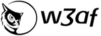

W3af - Intro

w3af is a Web Application Attack and Audit Framework. The project’s goal is to create a framework to help securing web applications by finding and exploiting all web application vulnerabilities.
The framework is proudly developed using Python to be easy to use and extend, and licensed under GPLv2.0.
Long term objectives
-
Create the biggest community of Web Application Hackers.
-
Become the best Web Application Scanner.
-
Become the best Web Application Exploitation Framework.
-
Combine static code analysis and black box testing into one framework.
-
Become the nmap for the Web.
Short term objectives
-
Make the community grow.
-
Become the best Open Source Web Application Scanner.
-
Become the best Open Source Web Application Exploitation Framework.